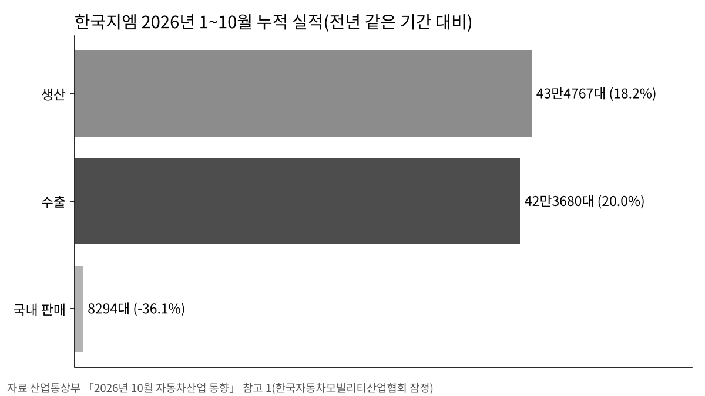
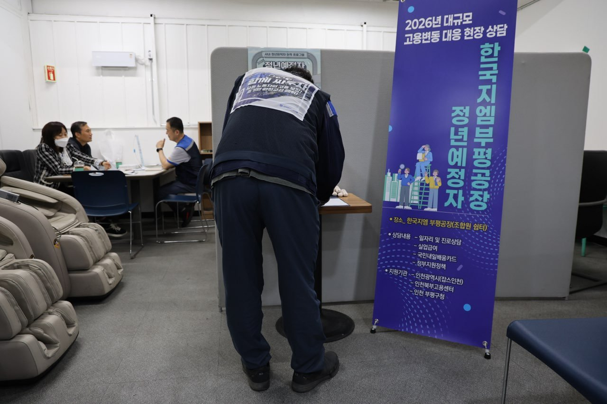
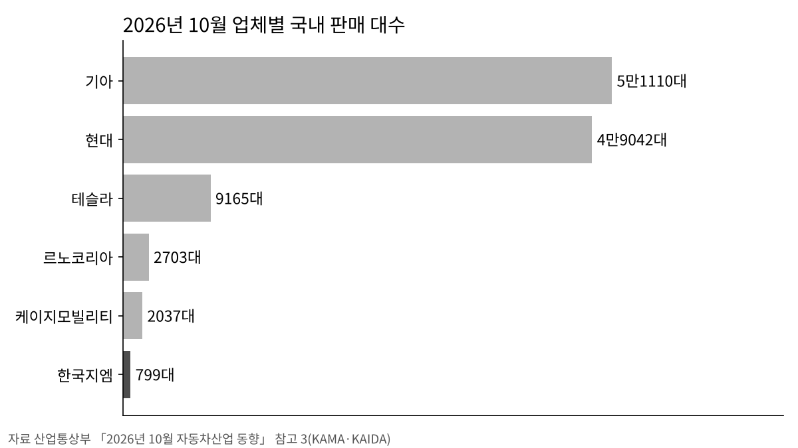

한국지엠 10월 수출 4만9372대 28.4% 증가, 내수 799대
1~10월 생산 43만4767대, 생산 대비 수출 97.4%
국내 판매 점유율 0.6%, 테슬라 9165대
부평공장 2032년까지 정년퇴직 약 1750명
AI경제저널=김갑봉 기자 | 인천 부평에 본사를 둔 한국지엠이 10월 완성차 4만9372대를 수출했다. 지난해 10월보다 28.4% 늘었다. 같은 달 국내에서 판 차는 799대로 33.0% 줄었다.
산업통상부가 16일 발표한 「2026년 10월 자동차산업 동향」의 업체별 표에 나온 수치다. 한국자동차모빌리티산업협회·한국수입자동차협회 잠정 집계다.
10월 자동차 수출액 65억5000만달러
산업부 집계를 보면 10월 자동차 수출액은 65억5000만달러다. 지난해 10월보다 18.1% 늘어 10월 기준 가장 많았다. 2위는 2024년 62억달러, 3위는 2023년 58억8000만달러다.
생산은 38만982대로 25.8% 늘었다. 내수 판매는 13만7166대로 7.9%, 수출 대수는 25만6097대로 26.2% 늘었다.
산업부는 추석 연휴가 지난해 10월에서 올해 9월로 옮겨 평균 조업일수가 4일 늘었다고 밝혔다. 친환경차와 스포츠실용차 수요도 수출 증가 요인으로 꼽았다.
시장별로는 북미가 33억7600만달러로 33.2% 늘었다. 이 가운데 미국이 28억5700만달러로 34.5% 늘었다. 미국 한 나라가 10월 자동차 수출액의 43.6%를 차지했다(AI경제저널 계산).
생산은 늘고 국내 판매는 줄고
한국지엠의 10월 생산은 5만1350대로 25.4% 늘었다. 1~10월 누적 생산은 43만4767대로 지난해 같은 기간보다 18.2% 많다. 누적 수출은 42만3680대로 20.0% 늘었다.
같은 기간 국내 판매는 8294대로 36.1% 줄었다. 누적 생산 대수에 견준 수출 대수는 97.4%다(AI경제저널 계산). 산업부 표 주석을 보면 한국지엠 국내 판매에는 수입해 파는 차(시에라 등)도 들어 있다.
1~10월 국내 완성차 생산 339만6459대 가운데 한국지엠 몫은 12.8%다(AI경제저널 계산). 현대 141만3170대, 기아 139만9237대 다음이다.

국내 판매 점유율 0.6%
산업부 참고 3의 10월 업체별 국내 판매 표에서 한국지엠 점유율은 0.6%다. 순위는 열세 번째다.
기아가 5만1110대로 37.3%, 현대가 4만9042대로 35.8%를 차지했다. 수입 브랜드 테슬라가 9165대로 세 번째다. 메르세데스벤츠 6744대, 비엠더블유 5633대가 뒤를 이었다.
국내 완성차업체 가운데 10월 국내 판매가 1만대를 넘은 곳은 현대와 기아 둘이다. 르노코리아 2703대, 케이지모빌리티 2037대, 한국지엠 799대, 타타대우 370대다.
부평공장 정년퇴직 2032년까지 1750명
인천시는 지난 4월 20일 낸 보도자료에서 한국지엠 부평공장 정년퇴직 예정 노동자 지원을 밝혔다. 부평공장에서는 올해 정년에 이르는 1966년생부터 2032년까지 약 1750명이 차례로 퇴직한다.
시는 부평공장을 찾아 현장 설명회를 열었다. 설명회는 전국금속노동조합 한국지엠지부의 요청으로 열렸다. 현장 상담은 인천북부고용복지플러스센터·부평구청과 함께 4월 20일부터 6월 말까지 석 달 동안 월 2회 진행하기로 했다.
상담 내용은 맞춤형 채용 지원과 재취업 상담, 직무전환과 직업훈련 연계, 실업급여와 국민내일배움카드 안내다.


2025년 산업연구원 분석, 한국GM 수출 90% 이상 미국
산업연구원 김경유 선임연구위원은 2025년 8월 『산업경제』에 「미국 자동차 고관세 부과 이후 자동차산업 영향 및 시사점」을 실었다. 그는 한국GM이 전체 수출 물량의 90% 이상을 미국에 수출한다고 적었다.
미국은 2025년 4월 수입 완성차에 25% 관세를 매겼다. 한국은 같은 해 협상에서 일본·유럽연합과 같은 15%로 합의했다. 김 연구위원은 15%도 여전히 높은 수준이라고 평가했다.
이 글에 실린 표를 보면 한국GM의 2025년 2분기 대미 수출은 11만2930대로 1년 전보다 8.9% 줄었다. 같은 분기 한국GM 차량의 미국 판매는 11만7422대로 5.2% 늘었다.
김 연구위원은 관세 영향이 부품업체로 번질 수 있다고 봤다. 완성차 생산이 줄면 부품 수요가 줄고, 완성차업체가 관세 부담을 넘기려 부품 단가 인하 압력을 높일 수 있다는 분석이다. 영세 부품업체는 대미 투자도 대체 수요처 발굴도 어렵다고 적었다.
승용차 수출 3개월 만에 증가
관세청이 같은 날 낸 10월 수출입 확정치를 보면 승용차 수출은 61억달러로 16.3% 늘었다. 관세청은 승용차 수출이 3개월 만에 증가로 돌아섰다고 밝혔다. 승용차 수출 증감률은 8월 -30.1%, 9월 -5.6%였다.
승용차 최대 수출국은 미국이다. 10월 승용차 수출에서 미국 비중은 46.8%이고, 대미 승용차 수출은 34.6% 늘었다.
같은 달 전체 수출은 1154억달러로 93.9% 늘었다. 반도체 수출은 567억달러로 257.5% 늘었다. 산업통상부는 1일 낸 10월 수출입 동향에서 반도체 외 품목 수출 증가율을 34%로 집계했다.
1~10월 누적 국내 자동차 생산은 339만6459대로 지난해 같은 기간보다 0.3% 많다. 산업부는 누적 생산이 3개월 만에 증가로 돌아섰다고 밝혔다.
참고문헌
- 김경유, 「미국 자동차 고관세 부과 이후 자동차산업 영향 및 시사점」, 『산업경제』 2025년 8월호 산업포커스, 산업연구원, 2025년, 26~36쪽, https://www.kiet.re.kr/upload/economyDetail/3096/A387F42487_1757564766477_3096.pdf
- 산업통상부, 「2026년 10월 자동차산업 동향」 보도자료(참고 1~4 업체별 표), 2026년 11월 16일, https://eiec.kdi.re.kr/policy/materialView.do?num=289595
- 관세청, 「2026년 10월 월간 수출입 현황(확정치)」 보도자료, 2026년 11월 16일, https://eiec.kdi.re.kr/policy/materialView.do?num=289594
- 한국자동차모빌리티산업협회·한국수입자동차협회, 2026년 10월 업체별 생산·판매 잠정 집계(산업통상부 보도자료 참고 1·3 출처)
- 산업통상부, 「2026년 10월 수출입 동향」 보도자료, 2026년 11월 1일, https://www.motir.go.kr/kor/article/ATCL3f49a5a8c/172360/view
- 인천광역시 경제정책과, 「인천시, 대규모 고용 변동 대응 현장 맞춤형 일자리 지원 강화」 보도자료, 2026년 4월 20일, https://www.incheon.go.kr/IC010205/view?repSeq=DOM_0000000014572993
[사진 출처]
- [사진 1·2] 인천광역시 경제정책과, 「인천시, 대규모 고용 변동 대응 현장 맞춤형 일자리 지원 강화」 보도자료 첨부 사진(정년예정자 진로상담 1·3), 2026년 4월 20일, 공공누리 제1유형(출처표시), https://www.incheon.go.kr/IC010205/view?repSeq=DOM_0000000014572993
※ 이 기사는 AI 프로그램 클로드를 활용해 작성했습니다.
저작권자 © AI경제저널 무단전재 및 재배포, AI학습 및 활용 금지